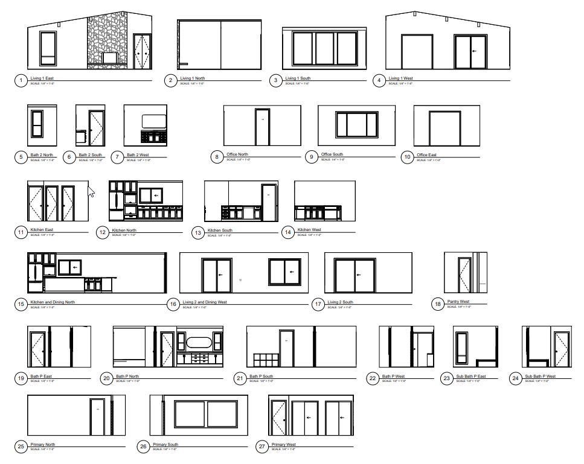

Da nuvem de pontos ao BIM
Do existente ao modelo.
Processamos o escaneamento a laser e a fotogrametria e transformamos a nuvem de pontos em modelos BIM as-built em Revit ou IFC, com plantas e cortes confiáveis para reforma, retrofit e compatibilização.
Quatro frentes de trabalho.
Cada frente pode ser contratada sozinha ou combinada com as outras.
Modelo as-built em Revit
Paredes, esquadrias, pisos, coberturas e estrutura modelados no nível de detalhe (LOD) combinado com você.
Desenhos do existente
Plantas, cortes e elevações cotados a partir do modelo, em DWG e PDF.
Obra × projeto
Comparação entre a nuvem e o modelo de projeto, com mapa de desvios em milímetros.
Retrofit e patrimônio
Base confiável para reforma, ampliação, HBIM e gestão do edifício.
Exemplos.
Imagens produzidas pela BRD. As marcadas como Participação BRD são de projetos reais; as demais usam modelos ilustrativos.



Quer aplicar isso no seu projeto?
Mande o que você tem, mesmo que seja só uma ideia ou um arquivo de estudo. Respondemos com uma proposta de escopo.